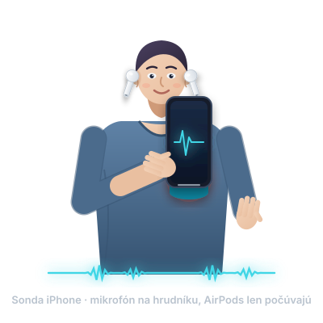
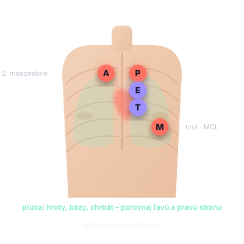
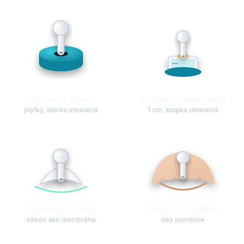

Ako Ausculta funguje
Stručný opis, čo sa so zvukom deje od mikrofónu po slúchadlá. Ausculta je edukačná pomôcka: zvuk zosilní, odfiltruje a zobrazí. Nič nemeria a nič nehodnotí.
Od mikrofónu po slúchadlá
Snímanie
Hlavná je sonda iPhone: spodný mikrofón v plnej kvalite (48 kHz), bez hlasového spracovania. Sonda AirPod sa ponúka len tam, kde iOS dá vysokokvalitné spojenie s mikrofónom (iOS 26, AirPods Pro 2 / Pro 3, AirPods 4, mimo EÚ).
Filter pásma
Zvon prepúšťa pásmo 20–220 Hz (nízke zvuky), membrána pásmo 100–1200 Hz (vyššie zvuky). Filter zvýrazní to, čo sa pri posluchu učí počuť, a potlačí zvyšok.
Zosilnenie
Automatické alebo ručné zosilnenie dorovná slabý signál. Limiter v zosilnení chráni uši pred prudkým nárazom.
Redukcia šumu
Po kalibrácii v tichu Ausculta odčíta šum prostredia a stlmí nárazy pri pohybe sondy.
Zobrazenie
Zvuková vlna a frekvenčné spektrum v reálnom čase. Sú to obrazy zvuku, ako v programoch na úpravu zvuku, nie zdravotné hodnoty.
Odposluch a nahrávky
Upravený zvuk počujete v slúchadlách. Nahrávky sa ukladajú ako WAV s miestom posluchu a poznámkou, prehrať a zdieľať ich môžete kedykoľvek.
Upozornenia na rušivé vplyvy
Ausculta ohlási, keď zvuk ruší pohyb sondy, tras ruky, reč, hluk v miestnosti alebo slabý kontakt s kožou. Sú to hlásenia o kvalite zvuku, aby ste vedeli, že treba sondu držať pokojnejšie alebo ju lepšie pritlačiť. Nehovoria nič o vašom zdraví.
Čo Ausculta nerobí
Ausculta nezobrazuje žiadne zdravotné hodnoty, nerozpoznáva ani nepomenúva zvuky, nevytvára diagnózy a nedáva odporúčania. Nie je zdravotnícka pomôcka, nič nemeria ani nediagnostikuje a nenahrádza vyšetrenie lekárom. Svoj posluch si porovnávate sami, napríklad s ukážkami z učebnice. Pri zdravotných ťažkostiach sa vždy obráťte na lekára.
Sonda a miesta posluchu

Sonda iPhone

Miesta posluchu
